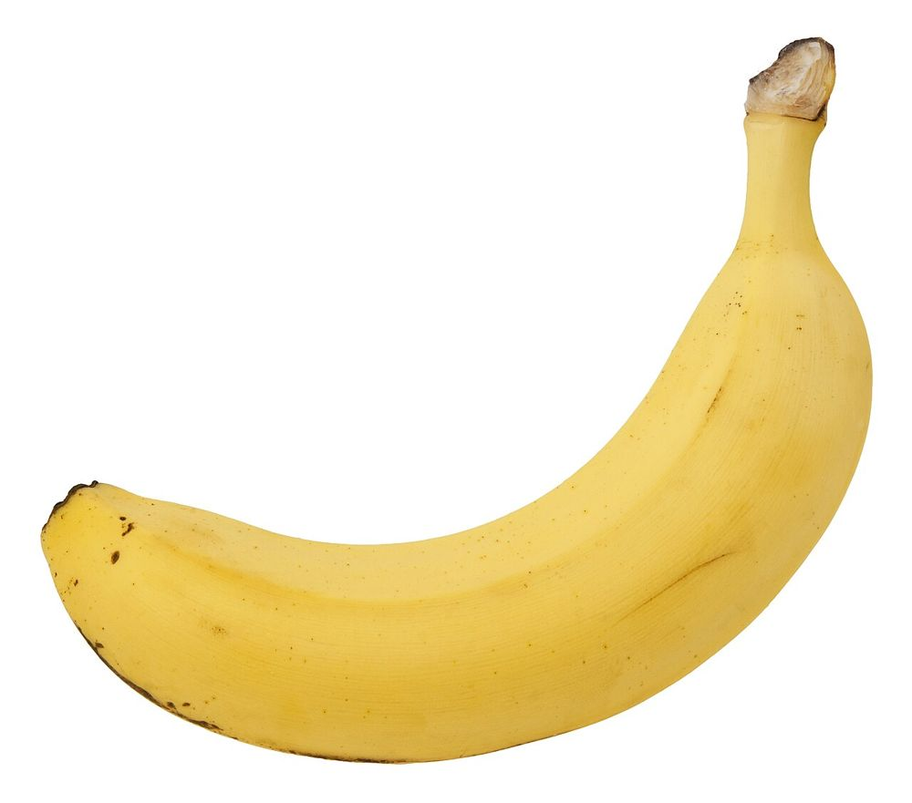

1Radyoaktivite her yerde
Radyoaktivite deyince aklımıza nükleer santraller ve atom bombaları gelir. Oysa doğada her yerde az miktarda radyoaktif madde bulunur: toprakta, kayalarda, havada, suda ve yiyeceklerimizde. Hatta kendi vücudumuzda bile.
Radyoaktif bir atom kararsızdır. Zamanla parçalanarak enerji yayar. Önemli olan, bir şeyin radyoaktif olup olmadığı değil, ne kadar radyasyon yaydığıdır.
2Muzdaki potasyum
Muz potasyum açısından zengin bir meyvedir. Potasyum, kaslarımızın ve sinirlerimizin çalışması için gerekli bir mineraldir. Doğadaki potasyumun çok küçük bir kısmı, yaklaşık %0,012'si, potasyum-40 adlı radyoaktif bir izotoptur.
Bu yüzden muz, aslında patates, fasulye, ıspanak ve diğer bütün potasyumlu yiyecekler gibi, çok hafif radyoaktiftir.

3Neden zararsız?
Muzdaki radyasyon miktarı son derece küçüktür. Üstelik vücudumuz potasyum miktarını sıkı bir şekilde kontrol eder. Fazla potasyumu böbrekler yoluyla atar. Bu yüzden muz yemek vücudumuzdaki radyoaktif potasyum miktarını kalıcı olarak artırmaz.
Vücudumuzda zaten her an doğal olarak potasyum-40 bulunur. Yani hepimiz biraz radyoaktifiz.
4'Muz eşdeğeri doz'
Bilim insanları, küçük radyasyon dozlarını halka anlaşılır biçimde anlatmak için yarı şaka bir ölçü kullanır: muz eşdeğeri doz. Bir muz yemenin verdiği radyasyon dozu çok kabaca 0,1 mikrosievert olarak kabul edilir.
Karşılaştırma için: Bir diş röntgeni yaklaşık 50 muza, kıtalar arası bir uçak yolculuğu ise yüzlerce muza eşdeğer doz verir. Bu ölçü resmî bir birim değildir ama radyasyon korkusunu doğru orantıya oturtmaya yardımcı olur.
💡 Biliyor muydun?
- Brezilya fıstığı, içerdiği radyum nedeniyle muzdan çok daha radyoaktif olabilen yiyeceklerden biridir.
- Muz yüklü kamyonların, limanlardaki hassas radyasyon dedektörlerini zaman zaman tetiklediği anlatılır.
- Yeryüzündeki doğal radyasyonun önemli bir kısmı topraktan sızan radon gazından gelir.
✅ Kaynaklar
📷 Görseller
- Kapak: TimothyPilgrim · CC BY-SA 3.0 · Wikimedia Commons
- Tek bir Cavendish muzu: Evan-Amos · CC BY-SA 3.0 · Wikimedia Commons